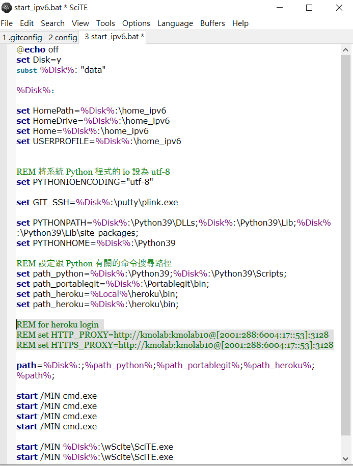

網路環境 <<
Previous Next >> 網路直播
Heroku 網站
步驟1: (建立 Heroku 帳號) 進入 https://heroku.com, 利用學校的 @gm 註冊一個 Heroku 帳號
步驟2: (建立 Heroku app) 登入 Heroku 後，先以 s + 學號 建立第一個 app
步驟三: (下載 Heroku CLI) 從 http://a.kmol.info:88/heroku.7z 下載 Heroku cli 程式檔案，解開至隨身碟 Y: 所在位置
步驟四: (修改命令搜尋路徑) 修改隨身系統的啟動批次檔案, 讓 Windows 的命令視窗中可以執行 heroku.exe，重新啟動已經納入可執行 heroku.exe 的隨身碟 start_ipv6.bat 或 start_ipv4.bat中
步驟五: (測試 heroku 執行) 重新打開start_ipv6.bat，在命令列中執行輸入 heroku version，如果有回應表示有設定成功
.png)
步驟六: (設定 heroku 代理主機) 在 y:\home_ipv6 下的 .giconfig 中， 以 git config --global http.proxy "http://your_proxy:port" 進行設定.
在 start_ipv6.bat 中加入:
|
1
2
3
|
REM for heroku login
REM set HTTP_PROXY=http:
REM set HTTPS_PROXY=http:
|
因為是用自己得網路，所以要在前面打REM

步驟七: (設定同步倉儲) 針對利用 Heroku 同步 Github Pages 上的網站內容, 只需要透過 git remote add (Heroku 指令為 heroku git:remote -a heroku_倉儲_名稱, 之後只要在 heroku login 狀態下, 可以直接利用 git push) 在近端設定一個連線到 Heroku 倉儲的代號, 就能在每次更新 Github Pages 倉儲後, 再將內容同步至 Heroku.
步驟八: (以 git 進行提交推送) 利用 heroku git:remote -a 設定的同步倉儲其推送名稱內定為 "heroku", 使用者只要使用 git push heroku 就可以將改版內容推送到對應的 Heroku app 倉儲.
網路環境 <<
Previous Next >> 網路直播